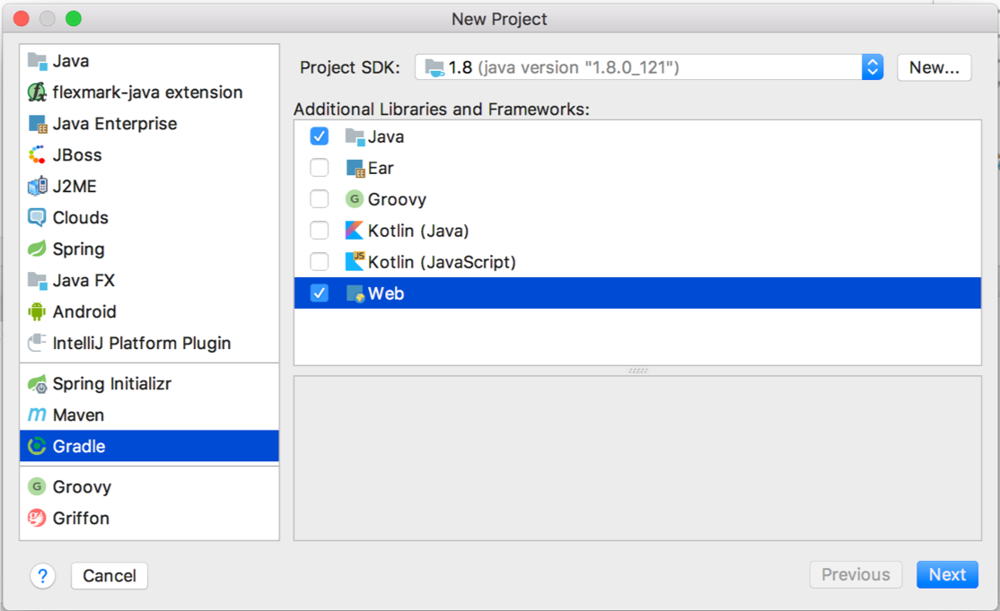
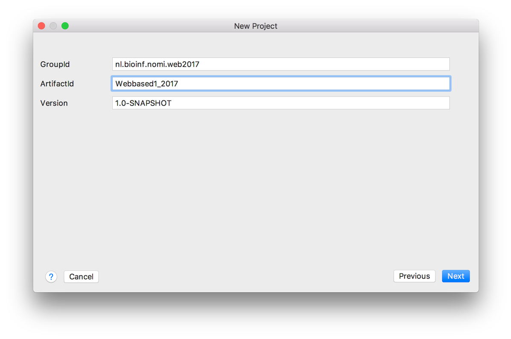
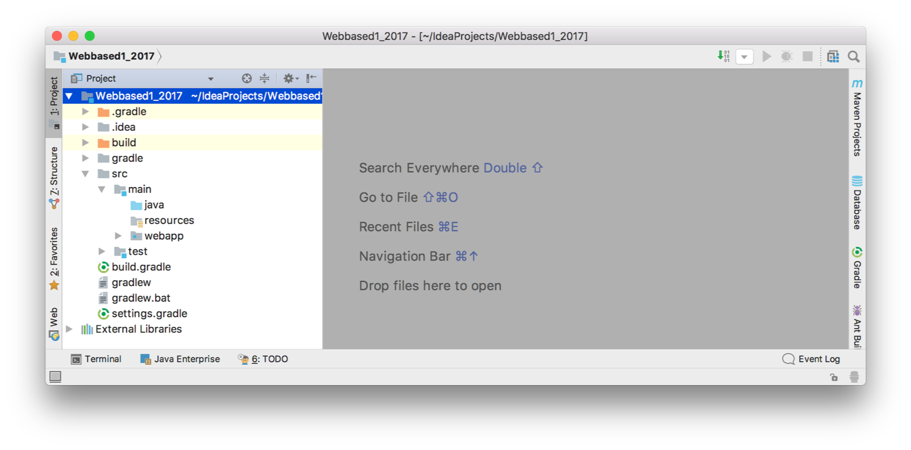
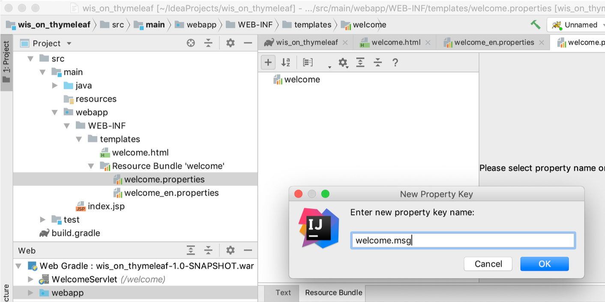
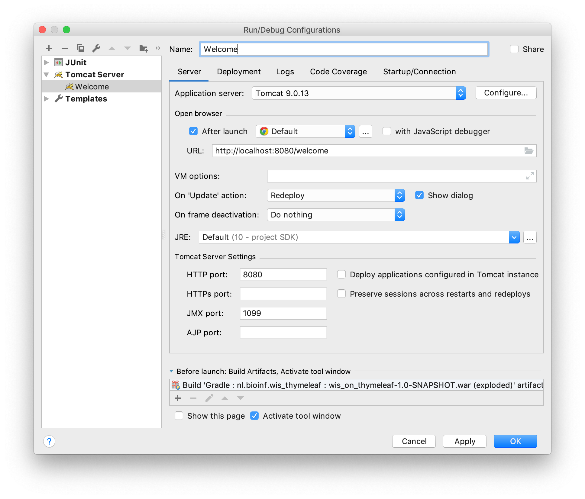
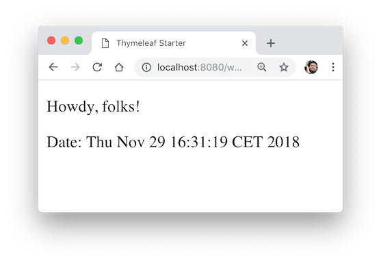

An internationalized Java web project with Thymeleaf
Introduction
The topic of this presentation is getting started with a Java web application using a Thymeleaf View that serves an internationalized welcome message.
Since JSP and not Thymeleaf is the default for basic Java web applications, this involves quite a few steps:
- configuring IntelliJ with the application server Tomcat
- creating a Gradle-managed web project
- creating a Thymeleaf template
- configuring the use of Thymeleaf
- creating a servlet
- running the web application
In this post, I'll show you how to get started with a basic project that supports internationalization.
Prerequisites
- Tomcat. I assume you have a working version of Tomcat server (see http://tomcat.apache.org/). This blog uses Tomcat 9.0.13. Simply extract the downloaded zip at a convenient location. Don't forget to make the *.sh scripts in the bin folder executable!
- IntelliJ Idea. This blog uses the 2018.3 Ultimate version. Please refer to Jetbrains for educational licences.
The steps
Configure Tomcat as webserver
After installation (extraction) of Tomcat, you’ll have to let IntelliJ know where it is. You do this via Preferences → Build, Execution, Deployment → Application Servers → click '+' (Add)

Create a Gradle-managed web project
Creating a Gradle-managed web project in IntelliJ:
- Choose File → New → Project
- Choose Gradle → + Java + Web → Next
You see something like this:

Enter GroupId, ArtifactId and Version and Click Next

Check “Use auto-import” and “Use Gradle wrapper” and Click Next and Click Finish
—You will have something like this:

Configure Gradle
In this project, we’ll be using Thymeleaf and JUnit5 (and the Servlet API). Since they are not readily available in Java, you’ll need to configure your projects’ dependencies.
Fortunately, Gradle is an excellent tool for dependency management.
Here is the contents of a basic build.gradle configuration file:
plugins {
id 'java'
id 'war'
id 'idea'
}
group 'nl.bioinf.wis_thymeleaf'
version '0.0.1'
sourceCompatibility = 1.8
repositories {
mavenCentral()
}
dependencies {
//Servlets
compile 'javax.servlet:javax.servlet-api:3.1.0'
//Thymeleaf
compile 'org.thymeleaf:thymeleaf:3.0.11.RELEASE'
//JUnit5
testImplementation 'org.junit.jupiter:junit-jupiter-api:5.1.0'
testRuntimeOnly 'org.junit.jupiter:junit-jupiter-engine:5.1.0'
}
The WEB-INF folder
Under web-app, create a folder called WEB-INF and within that one a folder called templates. —Within templates, create the html file called welcome.html.

Your file welcome.html should have this contents:
<!DOCTYPE html SYSTEM "http://www.thymeleaf.org/dtd/xhtml1-strict-thymeleaf-4.dtd">
<html xmlns="http://www.w3.org/1999/xhtml" xmlns:th="http://www.thymeleaf.org">
<head>
<title>Thymeleaf Starter</title>
<meta http-equiv="Content-Type" content="text/html; charset=UTF-8" />
</head>
<body>
<!-- welcome message read from resource bundle welcome.html-->
<p th:text="#{welcome.msg}">Welcome Offline</p>
<!-- date forwarded from the servlet-->
<p>Date: <span th:text="${currentDate}">Sat Oct 24 2015</span></p>
</body>
</html>
There are several non-html syntax elements that make this page special:
#{...} and
${...} and the Thymeleaf tag attributes th:text.
—#{...} fetches the value from the resource bundle (files named xxxxx.properties). The expression #{welcome.msg} gets the value of key welcome.msg from the file welcome_xx.properties. The expression— ${...} fetches the value set in the WebContext instance. The expression ${currentDate} gets the value for the attribute currentDate set in WebContext.
—Much more on this later.
Other than that, this is a plain old html file. You can open it in any browser and it will show you the non-processed view. This is what makes Thymeleaf so nice; you can develop the view of your app without using servers or template engines!
Create a resource bundle
A resource bundle is where you store your application texts. Instead of creating web pages for every language you are willing to support, you create text-free web pages and store the texts for the different languages in separate files called resource bundles.
This is how you add language support to your web app:
—Right-click the templates folder, select New → Resource Bundle → —Type welcome as base name → —Click '+' under 'Locales to add' and add 'en' → —Click OK

The resource bundle will open in your editor. It has plain text view and "resource bundle" view. Choose the latter. Click '+' to add a new Property key and name it welcome.msg.

Give some Dutch (or other language of course) and English values for welcome.msg.

Now you have internationalized your view.
Prepare to use Thymeleaf
Thymeleaf needs some configuration to get going. Here is some boilerplate code you can simply copy-and-paste.
—Under main/java, create a base package, e.g. <your_._domain>.<your_name>.<your_project>. Within it, create two additional packages: config and servlets. —Under config, create a new Java class file WebConfig.java. Put this code in there:
package nl.bioinf.wis_on_thymeleaf.config;
import org.thymeleaf.TemplateEngine;
import org.thymeleaf.templateresolver.ServletContextTemplateResolver;
import javax.servlet.ServletContext;
import javax.servlet.http.HttpServletResponse;
public class WebConfig {
public static TemplateEngine createTemplateEngine(ServletContext servletContext) {
ServletContextTemplateResolver templateResolver =
new ServletContextTemplateResolver(servletContext);
templateResolver.setTemplateMode("XHTML");
templateResolver.setPrefix("/WEB-INF/templates/");
templateResolver.setSuffix(".html");
templateResolver.setCacheTTLMs(3600000L);
// Cache is set to true by default.
// Set to false if you want templates to be automatically
// updated when modified.
templateResolver.setCacheable(true);
TemplateEngine templateEngine = new TemplateEngine();
templateEngine.setTemplateResolver(templateResolver);
return templateEngine;
}
/**
* Configures the response in a standard way.
* @param response
*/
public static void configureResponse(HttpServletResponse response) {
response.setContentType("text/html;charset=UTF-8");
response.setHeader("Pragma", "no-cache");
response.setHeader("Cache-Control", "no-cache");
response.setDateHeader("Expires", 0);
}
}
The main role of this class is to provide a template engine. This is the piece of the application responsible for processing the Thymeleaf templates into html views. To do this, the template engine needs to know -amongst other things- where these templates are. That is the responsibility of the TemplateResolver.
Create a Servlet
Finally, everything is going to fall into place. Under package ....servlets, create a new Servlet class with this contents:
package nl.bioinf.wis_on_thymeleaf.servlets;
import nl.bioinf.wis_on_thymeleaf.config.WebConfig;
import org.thymeleaf.context.WebContext;
import javax.servlet.ServletContext;
import javax.servlet.ServletException;
import javax.servlet.annotation.WebServlet;
import javax.servlet.http.HttpServlet;
import javax.servlet.http.HttpServletRequest;
import javax.servlet.http.HttpServletResponse;
import java.io.IOException;
import java.util.Date;
@WebServlet(name = "WelcomeServlet", urlPatterns = "/welcome", loadOnStartup = 1)
public class WelcomeServlet extends HttpServlet {
@Override
public void init() throws ServletException {
System.out.println("Initializing Thymeleaf template engine");
final ServletContext servletContext = this.getServletContext();
WebConfig.createTemplateEngine(servletContext);
}
private static final long serialVersionUID = 1L;
public void doPost(HttpServletRequest request, HttpServletResponse response) throws IOException{
process(request, response);
}
public void doGet(HttpServletRequest request, HttpServletResponse response) throws IOException{
process(request, response);
}
public void process(HttpServletRequest request, HttpServletResponse response)
throws IOException {
//this step is optional; standard settings also suffice
WebConfig.configureResponse(response);
WebContext ctx = new WebContext(
request,
response,
request.getServletContext(),
request.getLocale());
ctx.setVariable("currentDate", new Date());
WebConfig.getTemplateEngine().process("welcome", ctx, response.getWriter());
}
}
Of course, tha package declarations will be different, as well as the first import statement.
The alert reader may notice that this will create a TemplateEngine for each single servlet. This is probably not the very best strategy, but for simplicity, we'll stick to it for now.
Have a look at the Demo repo for a final solution with the template resolver.
Finally: run it
Create a new run configuration (it's in the top bar) and point it to http://localhost:8080/welcome.

Next, crank up your browser, and I hope you’ll see something like this:

Go to chrome://settings/languages and change your language to English, refresh the view of your welcome page and you’ll see this:

That’s it. It was quite some work, but this is the foundation for a nice basic Java + Thymeleaf driven web application.